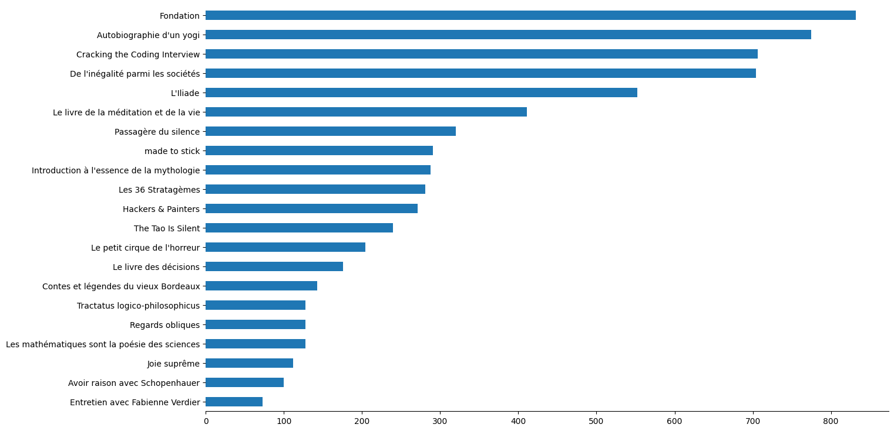
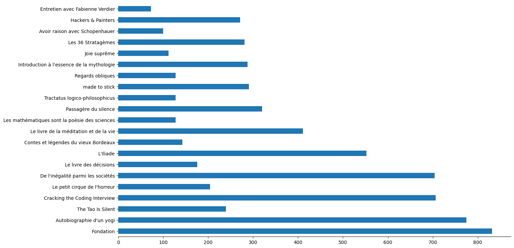

They accumulate slowly, but surely in my home.
Books that I haven't read of course.
We need a plan to optimize my reading process.
Nothing on Arxiv about optimized reading book in a special order, nothing on Google...
However, ChatGPT advises us to prioritize short books in order to keep a sens of accomplishment.
But, when I finished all the small reads, the problem stay the same : how do I read this tone of books ?
Ok, we need a blend of the ChatGPT approche and a little bit of common sense.
We need to slalom, we need to temperate : we need to alternte between book size.
I have 21 pending books.
There is a sample of our books, with there title and page number :
| title | pages |
|---|---|
| made to stick | 291 |
| Fondation | 832 |
| Autobiographie d'un yogi | 775 |
| Cracking the Coding Interview | 706 |
| Le petit cirque de l'horreur | 204 |
| Regards obliques | 128 |
| Contes et légendes du vieux Bordeaux | 143 |
Let's start by getting the data.
import pandas as pd
books = pd.read_csv('waiting_room.csv', index_col='title')Now that our data is loaded, we can answer a couple of obvious question like how many page should I read on a daily basisi in order to finish everything ?
books['pages'].sum()/365Around 20 pages a day, seems good to me.
We can have a look at the volume of page sorted by books and setting this order in term of volume using rank from Pandas.
books['rank'] = books['pages'].rank(method='first')
A new hope.
We can create a new column reading_rank to alternate the ranking as want it.
books.loc[books['rank']>(books['rank'].max()/2), 'reading_rank'] = books[books['rank']>(books['rank'].max()/2)]['pages'].rank(method='first') books.loc[books['rank']<=(books['rank'].max()/2), 'reading_rank'] = books[books['rank']<=(books['rank'].max()/2)]['pages'].rank(method='first')Reordering the list using sort_values gives us the final result.
books.sort_values(by=['reading_rank','rank'], ascending=False)['pages']Let's call it a plan and start reading ;)